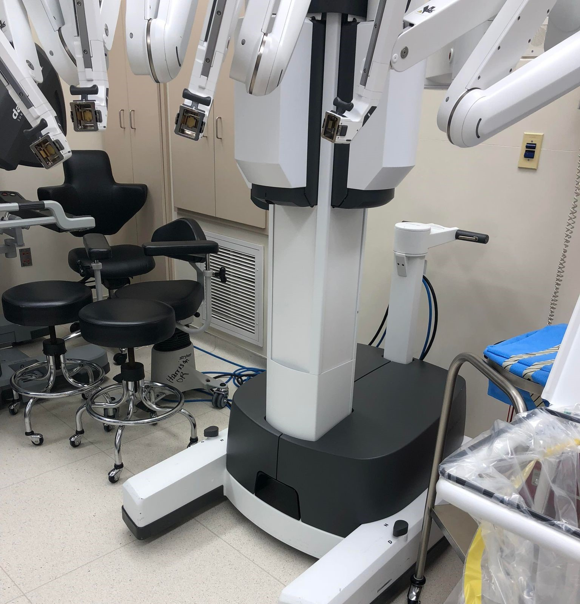
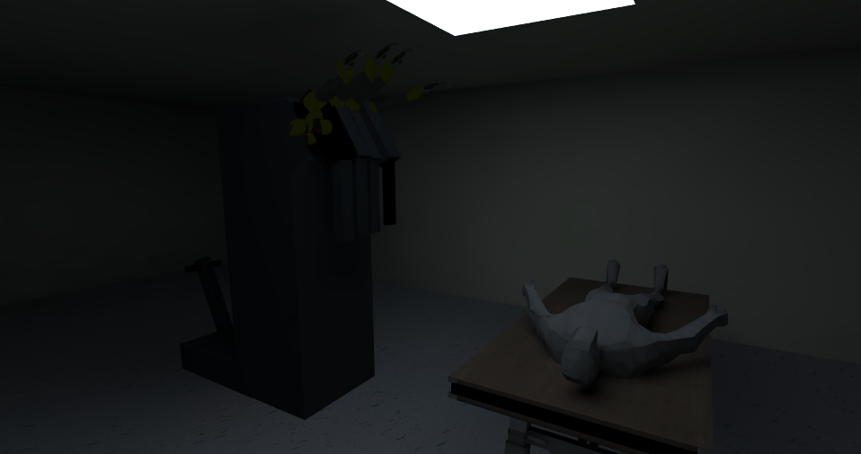

Da Vinci Docking Training Program
Covenant HealthCare hospital in Saginaw, MI operated surgeries using the Da Vinci Surgical System. Their surgical staff presented the problem that docking sequence times were consistantly high, sometimes upwards of two hours. High setup times correlated with high costs and increased the risk for complications to occur. Covenant sought help from a team of software designers to approach the problem.
When my team and I arrived at the hospital, we were able to step inside the operating room for a visual the machine and surrounding area.
I realized the issue they faced was due largely by obstruction of view from the robot itself. There was little room to look around the machine as it was positioning. I theorized installing a camera to the front for a better visual field. However, due to the system being owned by a separate company and leased to the hospital, it was unable to be modified. Several times, the director we spoke with mentioned the idea of a training program being helpful in training new OR staff. I suggested we create a program similar to their operating simulation, specifically for the docking sequence.
After leaving from the hospital, I proposed the idea to create the program in Unity as I had knowledge of it prior. My team members had not been exposed to Unity but were willing to endeavor in the course of action. This presented the opportunity for me to step up as a leader and teach them the basics of how Unity works. I knew if I was in their position, I would be starting a little out of my comfort zone and I wanted to close that gap for them to succeed in the project.
I designed a mockup in Blender and brought it to Unity for us to work with. Using C#, I scripted the transition between scenes and assigned movement for the user to move and interact with the robot. The objective was for the user to push the robot to a precise position next to the patient while their vision is accurately obstructed by the Da Vinci's body.
Given more resources and time, I would improve this project by creating it in a VR environment. I believe people learn best when actually operating the task they are trying to learn, and an education program on a computer limits the real life scenario. The closer the user feels to experiencing the real procedure, the better understanding they will have of it.